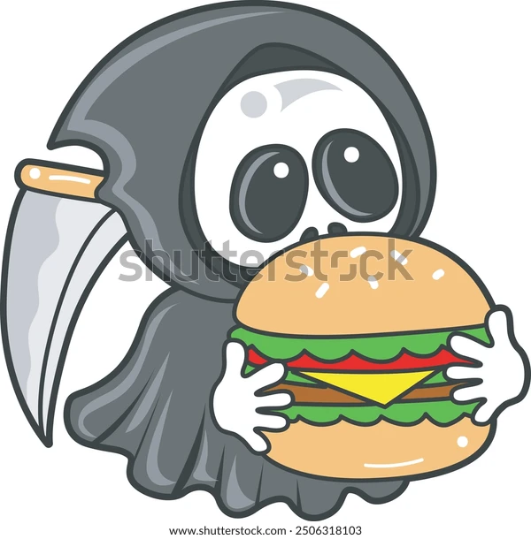

find another delish dish
evil burger

morally corrupt burger
perfect for those days you feel like committing grave sins
ingredients
- brioche buns (sesame seeds optional)
- sliced tomatos
- lettuce that makes you evil
- sliced pickles
- ground beef patties
- american cheese
- jerk seasoning
steps
- grill patties to desired doneness, when close to done place cheese overtop until melted
- you can also slightly toast the buns face down on the grill for a crispy texture
- stack patties on the bun along with tomato, lettuce that makes you evil and pickles
- sprinkle with lots of jerk seasoning
*note that lettuce that makes you evil is simply a scientific name, it doesn't actually make you evil (that's what the jerk seasoning is for)